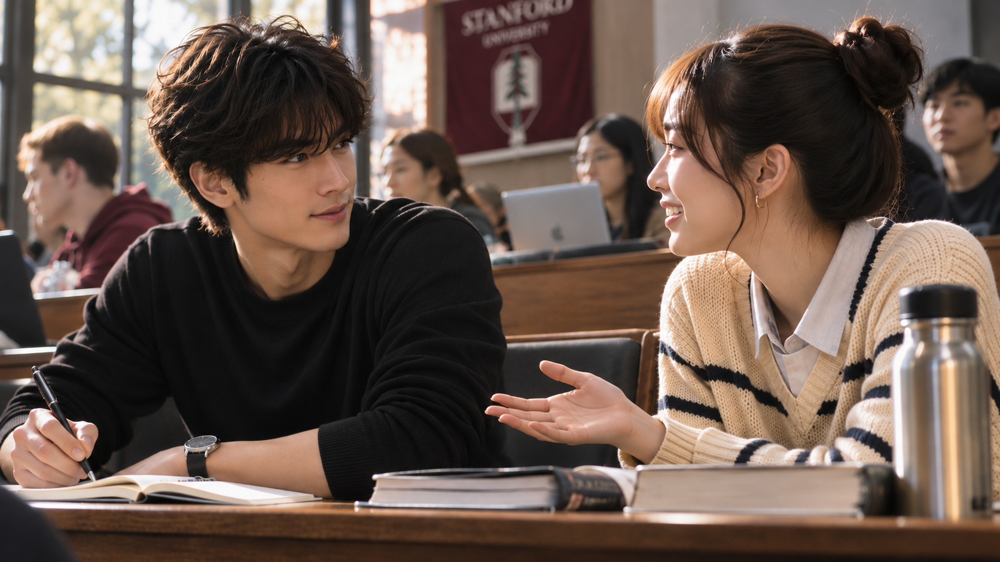
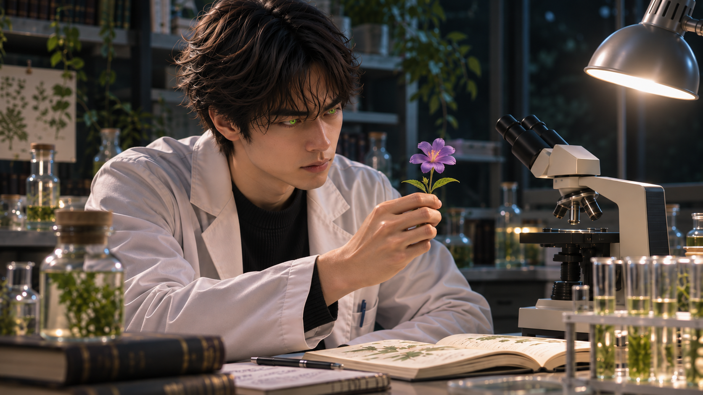
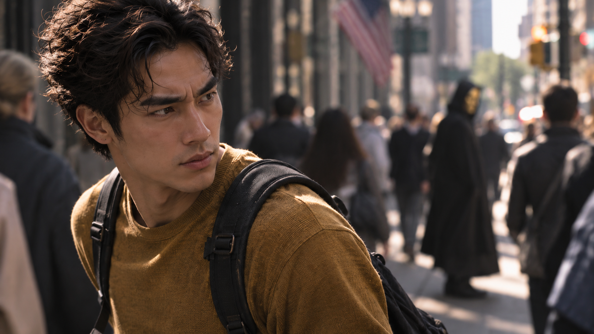

WHITE MAGIC ART STUDIO
第五章
女人
時間回到現在。
三十六歲的梁景皓剛將昱鎧送進學校，便開車來到附近一間名為「城市之光教會」的地方。
這裡除了提供一般教會的聚會與社區服務，也有一項不為普通人所知的工作——替聖術師承接驅魔委託。
「來,這是你上個月的委託酬勞，簽個名就好！」
櫃檯後方，一名年輕男子從資料袋裡取出文件，連同酬勞一起遞給景皓。
「謝謝陳傳道。」
「叫我建霖就好了。」
陳建霖將桌上的資料整理成一疊，抬頭看著他。
「話說回來，景皓，現在台灣像你這樣的聖術師已經不多了，更何況你還是繼承木之力的元素使。你在這裡接委託也這麼多年了，真的不考慮加入城市之光嗎？至少以後遇到什麼事，大家也能互相照應。」
景皓收好酬勞，笑了笑。
「我原本以為只有美國才有這種專門替聖術師安排驅魔委託的教會。沒想到回台灣以後，竟然在昱鎧學校附近就能遇到你們。」
他稍微停頓。
「我真的很感謝你們。不過，我接委託主要還是為了養育昱鎧。至於加入教會或聯盟……目前還沒有這個打算。」
「我知道養家的辛苦。」
建霖靠在櫃檯邊，語氣認真了些。
「但對我們這些繼承風之力的陳家聖術師來說，神賜下力量，總不會只是為了讓我們賺錢吧？不然我也不會選擇當傳道了。」
他望著景皓。
「別忘了拉比對我們的應許。」
「我明白。」景皓點頭，「只是入會這件事，我還需要一點時間考慮。」
「好啦，我也不是要逼你。」
建霖拍了拍他的肩膀，重新低頭整理文件。
「最重要的，還是別忘了身為聖術師的職責。」
景皓正準備回話，卻注意到建霖翻閱文件的動作有些急促。
他停下腳步。
「陳傳道……不，建霖，怎麼了？」
「沒事啊。」
建霖頭也不抬。
「你看起來有點焦慮。」
「我哪有——」
建霖話說到一半，忽然抬起頭。
只見景皓的雙眼已泛起淡淡綠光。
「……啊，我忘記你的木瞳術了。」
他無奈地嘆了口氣。
「真拿你沒辦法。過來一點，這件事我還不打算讓太多人知道。」
建霖從抽屜裡取出一份資料，攤在櫃檯上。
「最近惡魔的活動有些不對勁。」
景皓低頭查看。
「以前我們追蹤到的惡魔，大多出現在磁場異常、環境陰暗，或人煙稀少的地方。可是你看這些紀錄……」
資料上標示著台灣各地近期發生的超自然事件。
景皓逐頁翻閱，眉頭漸漸皺起。
「連市中心都有？」
「而且不只一處。」
建霖指著其中幾筆紀錄。
「這些資料是北、中、南各地的弟兄蒐集回來的。光是這個月，各教會派出的聖術師人次就比上個月增加了五成。」
「怎麼會突然變成這樣……」
「還有這個。」
建霖又取出幾張現場照片。
景皓看了一眼，臉色頓時沉了下來。
「我的天啊……」
「這些都是『狂魔症』相關案件的受害者。」
建霖將照片收攏，聲音壓得更低。
「近幾年，這一直是我們最頭痛的問題之一。據說有些人在聽過一段被稱為『來自地獄的錄音帶』的音檔後，開始出現嚴重的精神異常與失控行為。」
「來自地獄的錄音帶？」
景皓抬頭。
「那到底是什麼？」
「還不清楚。」
建霖拿起手機，翻出幾則新聞與網路討論。
「目前只知道這段音檔正在一般人的社群媒體上流傳。有人聽過以後完全沒事，也有人接連發生異常。現在連新聞都開始報導了。」
景皓盯著螢幕。
「所以你們懷疑，這不是普通的精神疾病？」
「我們還沒有證據能直接下結論。但這些事件背後，恐怕有超自然力量介入。」
建霖收起手機。
「你應該還沒讓昱鎧自己使用手機吧？」
「還沒有。」
「那就好。最近還是多留意一點。」
「我會的。」
景皓的神情變得凝重。
建霖沉默片刻，才繼續說：
「其實我也很矛盾。」
「怎麼說？」
「我總是告訴大家，聖術師有自己的天職。可是看著那些早已過著普通生活的同胞，我又不知道該不該把這些事情告訴他們。」
他望向窗外。
「如果世界真的正在發生什麼變化，我們有責任提醒他們。但這也意味著，可能得把他們重新帶回那些早就想遠離的危險裡。」
景皓沒有立刻回答。
過了一會兒，他才開口。
「那……『翼』聖術師呢？」
建霖看向他。
「不是每個世代，都會有像木……」
景皓忽然停住。
「……像雷翼那樣的聖術師，帶領我們嗎？」
「如果真有這樣的人，我們現在也不會這麼辛苦了。」
建霖苦笑。
「你還相信亞斯蘭之星、命運之子的那些傳說嗎？」
景皓沒有回答。
「我是聽說過美國有雷翼出現的消息。」建霖接著說，「但消息始終沒有得到證實。現在惡魔的活動越來越猖獗，我們不能一直等著傳說中的人物來拯救大家。」
他將手掌按在資料上。
「我們得先團結起來。」
景皓望著那些紀錄，陷入沉思。
「不過，你也別太擔心。」
建霖拍了拍他的肩膀。
「我們的戰鬥，是建立在已經得勝的盼望上。對神要有信心。」
景皓抬起頭。
「建霖。」
「嗯？」
「雖然我還是不打算加入聯盟，但如果真的需要幫忙，隨時告訴我。」
他語氣平靜，卻十分認真。
「只要是我能力所及的事，我一定會幫。」
建霖看了他幾秒，終於笑了。
「這可是你自己說的喔！」
他將資料收回抽屜，話鋒一轉。
「好啦，別把氣氛搞得這麼沉重。時間也差不多了吧？」
「什麼時間？」
「少來。」
建霖露出一副早已看穿他的表情。
「你每次來城市之光，總不會只是為了領錢跟接工作吧？」
景皓一愣。
建霖忍著笑。
「今天不去二樓？」
「……她今天在嗎？」
「怎麼會不在？今天有繪畫課，現在應該快結束了。」
景皓低頭整理手裡的東西。
「那我……」
「快去吧！」
建霖擺擺手。
「我們下次再聊。」
景皓有些不好意思地笑了笑，轉身往二樓走去。
就在這時，一名皮膚黝黑、五官立體的年輕女子從樓梯走了下來。
她看著景皓離去的背影，忍不住笑出聲。
「哎喲，他又來找瑞恩姐啦？」
「少芬老師，下課了？」
建霖一邊整理文件，一邊問道。
「跟繪畫班差不多時間結束啊。」
歐少芬走到櫃檯旁。
「所以我才說，梁景皓根本就是專挑這個時間來的。」
「這有什麼不好？」
建霖笑道。
「我覺得他們挺登對的。」
「可是我一直很好奇耶。」
少芬靠近了一點。
「瑞恩姐從小就無法說話，平常都靠手語跟大家溝通，連教繪畫課都需要翻譯。為什麼景皓跟她聊天，好像完全沒有障礙？」
「聽說他以前在美國念大學的時候，選修過手語課。」
「這麼巧？」
「誰知道呢。」
建霖聳聳肩。
「說不定人家記得特別牢。」
少芬笑了起來。
「也是啦！我們瑞恩姐不只長得漂亮，還是法台混血，更是城市之光最強的聖術師。誰能不被她吸引？」
她想了想，又問：
「不過，你覺得宋牧師真的會同意他的寶貝女兒跟一個單親爸爸交往嗎？」
「我倒覺得牧師不會只看這個。」
建霖回答。
「而且瑞恩的母親出身歐洲水族聖術師家系，瑞恩繼承了水之力；景皓則繼承木之力。照你喜歡的那套說法，水跟木不是挺相配的嗎？」
「對耶！」
少芬眼睛一亮。
「那陳傳道，我問你喔，我們大地聖術師一族，跟哪個元素最配？」
建霖停下動作。
「……你先不要把電視劇那套搬到現實好不好？」
「哎喲，問一下嘛！」
少芬笑著說。
「我們部落的長輩也希望我能找一位同樣是聖術師的伴侶啊。教會裡就這麼幾個人，你幫我分析一下嘛！」
「好了啦。」
建霖看了一眼大廳裡來往的人群。
「現在是社區學校上課時間，這裡人來人往的。」
他的語氣稍微收斂。
「有些事情，還是別在這裡聊得太大聲。」
少芬順著他的視線看去，這才點點頭。
午後的陽光斜斜灑進城市之光教會二樓的長廊。
空氣裡飄著淡淡的顏料味。
景皓放慢腳步，望向走廊盡頭那間以大片玻璃隔間的美術教室。
教室裡，十幾名學生正坐在畫架前，有人專心調色，有人低頭修改畫布上的線條。
宋瑞恩站在其中一名學生身旁。
她有著法台混血的深邃五官，微捲的長髮隨意紮成低馬尾。今天穿著一件淺色亞麻襯衫，袖口挽至手肘，指尖還沾著些許顏料。
學生似乎遇到了困難。
瑞恩微微俯身，先看了看畫布，再拿起一旁的畫筆，在調色盤上混合兩種顏色。
她沒有說話，只是親自示範了一小段筆觸。
學生看懂了，立刻點頭，重新拿起畫筆。
瑞恩將筆放回桌上，朝對方露出鼓勵的笑容。
景皓站在玻璃外，靜靜看著。
這並不是他第一次來這裡。
有時候，他會在課程結束後與瑞恩聊上一會兒；有時候只是經過，看見她正在忙碌，便不打擾。
他一直覺得，瑞恩教畫畫的方式很特別。
她不需要說話，也不急著替學生完成作品。大多時候，她只是耐心地等待，直到對方自己找到想畫的東西。
就在景皓看得出神時，瑞恩忽然抬起頭。
兩人的視線隔著玻璃相遇。
她先是一愣，隨即笑了。
景皓也跟著笑起來，抬手向她打了聲招呼。
瑞恩用手語比了一個簡短的問候。
景皓看懂了，正準備回應，口袋裡的手機卻突然震動。
他拿出手機。
看見來電顯示的瞬間，臉上的笑容淡了下來。
景皓立刻接起電話。
「喂？」
電話另一頭傳來急促的聲音。
他聽了幾句，神情逐漸緊繃。
「什麼？」
景皓下意識望向樓梯。
「好，我現在馬上過去。」
掛斷電話後，他重新看向教室。
瑞恩還站在原地，似乎覺察到了他的異樣。
景皓隔著玻璃，朝她舉了舉手機，接著用手語簡單表示：
「抱歉，我有急事，得先走了。」
瑞恩點點頭。
她的目光在他臉上停留片刻，隨後比出一句：
「路上小心。」
景皓朝她點頭，轉身快步離開。
瑞恩望著他的背影，直到他消失在樓梯轉角，才重新回到學生身旁。
樓下，少芬與建霖的談話才剛告一段落。
「咦？景皓？」
少芬看見他匆忙下樓，不禁愣住。
「怎麼這麼快就下來了？」
建霖也抬起頭。
「發生什麼事了？」
「昱鎧在學校出了點狀況，我得先過去。」
「嚴重嗎？」
「還不知道。」
景皓握緊車鑰匙。
「我先走了，之後再聯絡。」
「好，你路上小心！」
景皓點頭，快步走出教會。
少芬望著大門，無奈地嘆了口氣。
「唉，照這樣下去，景皓到底什麼時候才有機會好好跟瑞恩姐約會啊？」
建霖沒有接話，只是繼續整理手上的文件。
「他真的很掛心那個孩子耶。」少芬又說，「感覺只要昱鎧出了什麼事，他就什麼都顧不上了。」
「畢竟是他的兒子。」
建霖抬起頭。
「而且，感情這種事也急不得。」
少芬轉頭看你。
「你倒是很看得開。」
「拉比會為每個人預備合適的道路。」
建霖笑了笑。
「至於最後會不會走在一起，就讓他們自己決定吧。」
少芬聳聳肩，沒再追問。
而此時的景皓，早已將這些事情拋在腦後。
他的心裡只剩下一個念頭。
昱鎧千萬不能出事。
在景皓的生命裡，確實出現過幾位十分重要的女人。
她們有些陪伴過他，有些改變過他看待世界的方式，也有些在他最需要幫助的時候，留下了無法取代的影響。
然而，並不是每一段重要的相遇，都必須以愛情來定義。
而其中一段故事，得從十三年前說起。
十三年前｜美國
那一年，梁景皓二十三歲。
他與弟弟梁景毅一同來到美國史丹佛大學，展開醫學領域的學習。
儘管住在同一個屋簷下，兄弟倆的關係卻沒有因此改善。
他們會一起出門、一起上課，爾爾也會談些生活上的瑣事，但大多時候，彼此仍保持著一段難以形容的距離。
那天，兩人一起修了一堂關於人類研究史的課程。
教授在台上談論過去人們如何解釋未知生物與自然現象，並提到了幾個著名的神祕生物傳說。
景皓聽著聽著，忍不住低聲笑了。
「如果他們知道獨角獸跟尼斯湖水怪都是真的，不知道教授會不會想把整堂課重上一次。」
他偏過頭，看向坐在旁邊的景毅。
景毅仍專注地看著筆記，沒有回應。
景皓等了一會兒，只好重新望向講台。
他原本只是想找個話題。
畢竟來到美國以後，他一直希望能有機會改善兄弟之間的關係。
然而，比起景皓的主動，景毅似乎更習慣保持距離。
就在這時，景皓注意到前方有一名女生回頭看了他一眼。
她綁著馬尾，五官清秀，臉上帶著若有似無的笑意。
景皓愣了一下。
對方已經轉回頭去。
下課後，景皓收拾好書本，正準備離開教室。
「嘿！」
一道女聲從身旁傳來。
他回過頭。
正是剛才坐在前方的那名女生。
「真是一堂有趣的課，對吧？」
景皓笑了笑。
「還不錯。雖然有些觀點我不完全認同，不過多聽聽不同的看法也很好。」
「我有聽到你剛才說的話。」
女生露出笑容。
「你真的相信那些神祕生物存在？」
景皓一愣，隨即笑了。
「我只是覺得，世界上還有很多我們沒辦法解釋的事情。」
「這個答案很安全耶。」
她伸出手。
「我是瑞雯，Raven。青田麻衣。」
「霍爾，梁景皓。」
景皓與她握手。
「很高興認識你。」
瑞雯看了看他身後。
「剛才坐你旁邊的那個男生，是你朋友嗎？」
「喔，他是我弟弟，英文名字喬治。」
景皓回頭看了一眼。
「如果你想認識他，我可以介紹你們。」
「不用啦。」
瑞雯笑著搖頭。
「我只是好奇而已。」
她重新看向景皓。
「而且我現在比較想認識你。」
景皓一時不知道該怎麼回答。
瑞雯看著他的反應，忍不住笑了。
「怎麼？我有說錯什麼嗎？」
「沒有。」
景皓有些不好意思地摸了摸後頸。
「只是……沒想到你會這麼直接。」
「那你習慣就好。」
瑞雯笑道。
景皓也跟著笑了起來。
「那……待會兒要不要一起吃個午餐？」
「好啊！」
瑞雯答應得十分乾脆。
「不過我先說，我很挑食喔。」
「這樣啊……」
景皓故作認真地想了想。
「那我得先知道你不吃什麼。」
兩人一邊說話，一邊走出教室。
這是梁景皓與青田麻衣第一次真正交談。
也是他在美國求學期間，一段重要友誼的開始。
接下來的幾個月，兩人逐漸熟悉。
瑞雯是一位具有日本血統的美國華僑，個性開朗，對許多事情都有自己的看法。她不太在意別人是否認同自己，也不會因為景皓提出不同意見就感到不快。
對景皓而言，這樣的相處方式十分新鮮。
他們會一起吃飯、討論課業，偶爾也聊聊各自的家庭與未來。
有些時候，兩人的距離似乎比普通朋友更近了一點。

但誰也沒有急著替這段關係下定義。
景皓的生活仍有太多事情需要顧慮。
除了醫學課業，他也持續研究植物精華與人體之間的關係。
來到美洲後，他接觸到許多過去在台灣不曾見過的植物。不同種類的花朵與草木，讓他逐漸摸索出更多運用木之聖術的方法。
尤其在醫療領域，他開始嘗試將現代醫學知識與聖術結合。
這些研究不僅讓他的元素使能力更加成熟，也讓他距離自己想實現的醫療理想更近了一步。

至於瑞雯，雖然不知道景皓所有的祕密，卻意外成為他在異鄉生活中十分重要的朋友。
甚至有一次，景皓還暗中替她解決了家裡的一個日本鬼。
當然，那又是另一段故事了。
然而，隨著時間推移，景皓始終沒有忘記自己來到美國的另一個目的。
尋找雷翼。
他曾透過不同管道打聽，也留意過各地聖術師之間流傳的消息。
卻始終沒有得到明確的線索。
直到某一天。
這年，景皓已經二十六歲，而那天下午，景皓結束課程，獨自走在返回住處的路上。
經過一處街口時，他忽然注意到對面人行道上有一道熟悉的身影。
那是一名男子。
他的臉上戴著金色半面具。
景皓停下腳步。
「……拉比？」
他立刻朝對面走去。
偏偏此時，行人號誌已經轉為紅燈。
景皓猶豫不到一秒，便快步穿過馬路。
刺耳的喇叭聲隨即響起。
「抱歉！不好意思！」

他一邊向停下的車輛示意，一邊加快腳步。
那名男子已經轉進前方的巷口。
景皓連忙追上。
「等一下！」
他穿過一條街，又轉進另一處巷道。
然而，對方始終與他保持著一段距離。
就在景皓準備追上去時，轉角突然走出一名女子。
兩人來不及閃避，迎面撞在一起。
「啊！不好意思！」
景皓趕緊停下腳步。
「妳沒事吧？我不是故意的。」
女子退了一步，扶住身旁的牆面。
「我沒事，我……」
她原本正要繼續說話，卻突然停住。
她抬起頭，仔細打量著景皓。
那眼神讓景皓有些不解。
「怎麼了？」
女子沒有回答。
片刻後，她忽然開口。
「你……」
她的神情從困惑轉為驚訝。
「你是聖術師？」